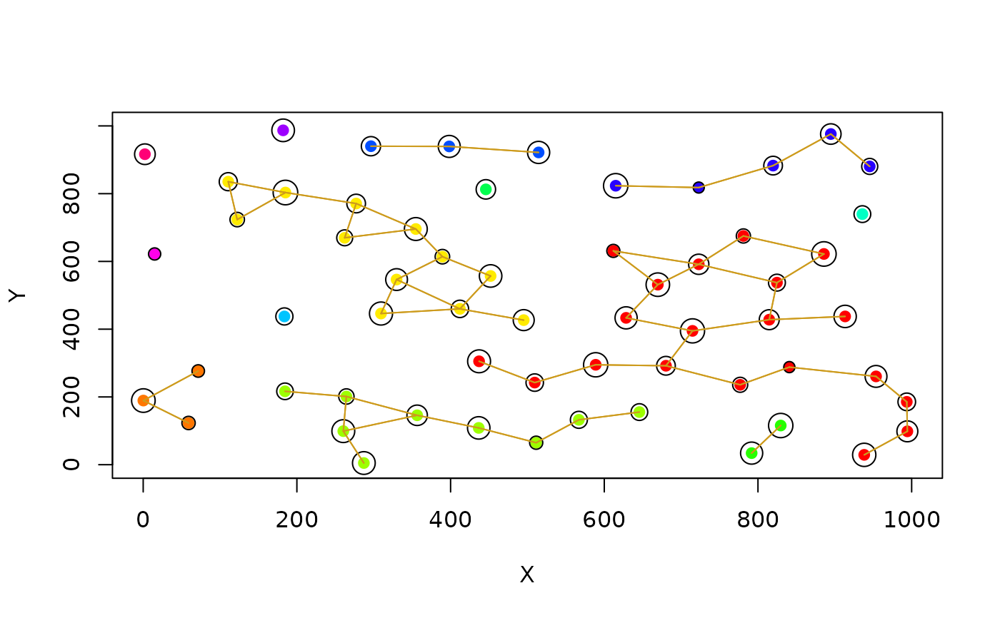

Creates random landscape graph
rland.graph.RdOne of the key functions of the package, which allows the creation of random landscapes (represented as graphs) with two categories: habitat patch and non-habitat matrix. The landscapes can be different depending on the parameters chosen.
Arguments
- mapsize
Landscape mosaic side length, in meters.
- dist_m
Minimum distance between patches (centroid).
- areaM
Mean area (in hectares).
- areaSD
SD of the area of patches, in order to give variability to the patches area.
- Npatch
Number of patches (might be impaired by the dist_m, see the "Note" section).
- disp
Species mean dispersal ability, in meters.
- plotG
TRUE/FALSE, to show graphic output.
Details
The dispersal distance, as given by the parameter 'disp', is used for the computation of some of the connectivity metrics (function metrics.graph) and for the graphic representation of the landscapes (in both cases defining the groups of patches, or components). For the simulation of the metapopulational dynamics, the dispersal distance is given through the 'alpha' parameter (the inverse of the mean dispersal ability) in the parameter data frame created by create.parameter.df. This has an important consequence: no thresholding (considering the dispersal ability) is assumed when simulating the metapopulational dynamics.
Value
Returns a list, with the following elements:
mapsizeSide of the landscape in meters.
minimum.distanceMinimum distance between patches centroids, in meters.
mean.areaMean patch area in hectares.
SD.areaStandard deviation of patches area.
number.patchesTotal number of patches.
dispersalSpecies mean dispersal ability, in meters.
nodes.characteristicsData frame with patch (node) information (coordinates, area, radius, cluster, distance to nearest neighbour and ID). An additional field, colour, has only graphical purposes.
Note
If the mean distance between patches centroid and the number of patches are both too high then the number of patches is lower than the defined by the user.
Examples
#Example to create a random landscape graph with 60 patches with a mean area
#of 0.05 hectares.
#The landscape mosaic is a square with 1000 meters side.
#The species mean dispersal ability is 120 meters (in order to connect the patches).
#A plot with the landscape graph is displayed graphically.
rl1 <- rland.graph(mapsize=1000, dist_m=80, areaM=0.05, areaSD=0.02, Npatch=60,
disp=120, plotG=TRUE)
